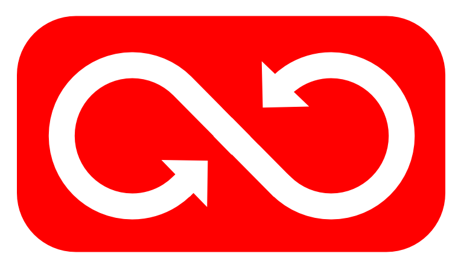
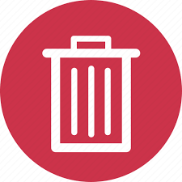
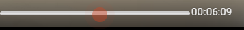
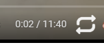
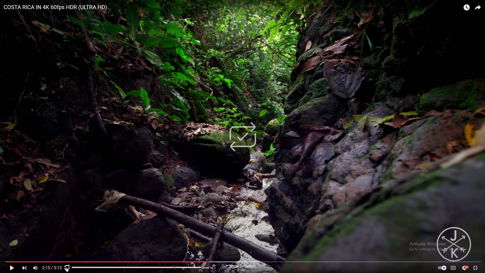
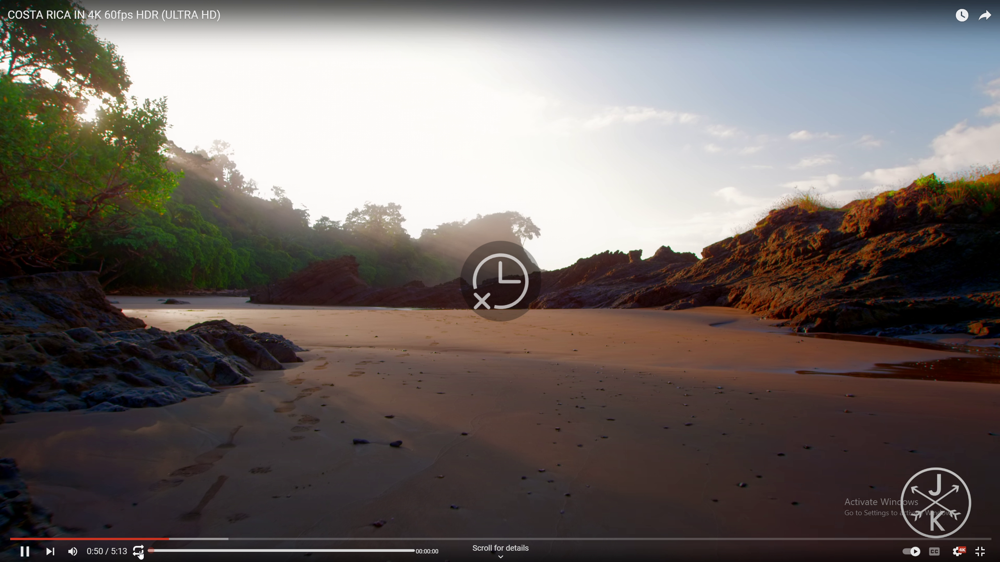

How to Use The Just Repeat Extension 
Once the extension is installed, you can use it to create and manage loops in YouTube videos. Here's how to use the extension:
- The selected loop will be added to the list of loops for the current video.
- To DELETE a loop, click on the delete button  next to it in the loops list.
- To SELECT AND PLAY a loop, click on the play button
 next to it in the loops list.
next to it in the loops list.
1
Open a YouTube video in your browser.
2
Drag the range slider to select the end time of the loop.
3
Click on the Loop button to create a loop at the youtube player current time (e.g. 0:02 - 06:09).
4

If the loop was successfully made
5

If the loop was unsuccessful (e.g. 06:09 - 0:02 the end time was less than the start time)